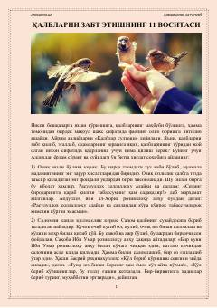

QZInsonlar mehrini qozonish va go'zal muomala qilish bo'yicha 11 ta foydali tavsiya.
Ushbu asarda insonlar o'rtasidagi o'zaro hurmat va muhabbatni shakllantirishning 11 ta muhim omili bayon etilgan. Muallif Islom dini manbalari va ulamolar o'gitlari asosida muomala madaniyati, saxovat va samimiylikning ahamiyatini yoritib beradi.